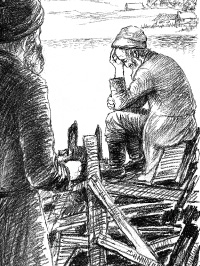

The Groan That Saved Me
 The wasteland of death and disease that encompassed all of Samarkand was fully evident between the four walls of the Balchana, the room in the attic where we davened and said Kaddish – it seemed to me that we said Kaddeishim more than we davened. Most of the worshipers said Kaddish after a child, father or mother or after two or three family members. There were the crooked walls and the pitted floor that seemed as if it were kneaded of ashen earth that crumbled in the Samarkandian heat. The pockmarked walls revealed the yellow wooden skeleton of the house. They looked like dry bones after the meat was removed.
The wasteland of death and disease that encompassed all of Samarkand was fully evident between the four walls of the Balchana, the room in the attic where we davened and said Kaddish – it seemed to me that we said Kaddeishim more than we davened. Most of the worshipers said Kaddish after a child, father or mother or after two or three family members. There were the crooked walls and the pitted floor that seemed as if it were kneaded of ashen earth that crumbled in the Samarkandian heat. The pockmarked walls revealed the yellow wooden skeleton of the house. They looked like dry bones after the meat was removed.
Narrow, crooked stairs led up to the minyan in the attic. And we, those who said Kaddish, had to climb them one by one; both because of their narrowness and so that they wouldn’t collapse from excessive weight. This is why, when someone climbed the steps you would hear faint squeaks and groans, which allowed the climbers to join in and free the blocked emotions choking their throats; one with an “Oy” and another with a “Vei” and a third with an “Oy Vei.”
Only one of the men did not groan even once. He was a middle-aged man. His beard wasn’t large but was very dense, and it seemed strange attached to his gentle pale face. His eyes were clear and alight, making one feel uncomfortable when looking directly into them.
He was a strapping fellow, something my mind couldn’t grasp since I knew that he was starving like the rest of us, and maybe more so. This man (for some reason I never learned his name) came to Samarkand from a distant, frozen camp in Siberia. He brought with him a sickly daughter, a long tattered strange looking garment, and two frostbitten fingers which remained of his right hand.
He came to Shacharis every day but did not often attend Mincha and Maariv because of his night blindness (due to prolonged starvation). When he showed up for Mincha Maariv, his daughter would come for Maariv and hide beneath the stairs and walk him home after the davening.
He was one of the two or three men who did not say Kaddish. He always stood with his face to the narrow wall between two warped windows. During Shacharis I could not see his face since he would cover his head and part of his face with his old, worn tallis that moved back and forth due to his vigorous swaying. This was also the reason why it was always empty on either side of him; nobody sat there, almost as if his fevered davening belonged in its own space, a corner of fervor amidst the sorrowful and lackluster davening of the mourners.
It was only when the fifteen-sixteen mourners said Kaddish that he stopped shaking, lifted his tallis with a quivery twitch and remained standing there frozen in place, as though the roar of Yisgadal
V’yiskadash somehow pressed in and constrained him.
By nature, even at my best, I was shy and withdrawn. So I was often cheated out of a chance to daven, amongst the many mourners. In addition, being the youngest of those saying Kaddish, I could not often lead the davening. With the oppressive starvation, the suffering and pain, every mourner tried to serve as the leader of the davening as if they thought that there they would be able to tear out of themselves, with greater strength and a loud voice, all the bitterness of life and death. For me, the few steps to the lectern were like some vast expanse that I could not cross. My claim that now I was saying Kaddish not only for my father but also for my sister did not help. The truth is I wasn’t alone in that.
That man came to my aid on more than one occasion when he saw me standing in the back. He would turn around from “his” wall, take my hand in his, and lead me to the front. While doing so, he would say in the matter of fact tone of one used to getting his way, “Nu, nu, it’s about time to let him lead the service.” And it worked, without complaints or arguments.
Did he have a special feeling for me? Maybe. On rare occasions he said a word to me; he did not even ask me my name. But a few times, he took a little package out of his tallis and t’fillin bag. It was wrapped in a piece of paper and he put it into his inner pocket. Then, he slowly approached my corner and pushed the package into my hand. He did this confidently and quickly so nobody would notice. He did it with such authority that I could not refuse him. Why did he do this? How could he allow himself? I don’t know.
What I can say for sure is that my feelings towards this man went far beyond the food he pushed on me. I benefited far more than that from him. A feeling of consolation and upliftedness wafted over me from this Yid who would pull his tallis over his head beyond his beard. His tzitzis in the back were wedged into his gartel and the tallis covered his upper body almost completely, as though he was cut off from the surroundings of this earth of congealed sand. You could sense that there, under the tallis, life was stirring. It seemed as though the man’s whisperings that emerged from the depths of his heart originated from afar, from a place where the soul is closer to its Maker, a place where feelings are not dulled by hunger and heat and the heart delights in enjoyment.
He would daven at length in the morning. He would pause several times at certain set places in the davening, take a coin out of his pocket and place it on the windowsill. They were small coins but he did it with such assurance and bent his entire body in this effort that it seemed that by doing so he was taking something out of his very being, out of his life.
After the davening, and after removing his tallis and t’fillin, he would collect the coins and slowly wrap them in his handkerchief and put them in his pocket. As he did so, an almost imperceptible joy flitted across his face; probably, thanks and praise to the One who had enabled him to save a few kopecks for tz’daka.
For three months I had to stop reciting Kaddish. During this time, I parted from the world several times when the “starvation disease” sucked out the little bit of life I had left. My second sister was sick at this time with this disease and one day, she left this world. My father and two sisters were gone.

At the start of summer (during the days of S’fira of the year 1943), I dragged myself from the house. What day it was, I don’t remember. It was after three months of being in a darkened room in which I constantly saw how life ebbs and is extinguished, and I felt the chill brought on by the howling of the jackals at night from the sand dunes behind the old city. The sun that day looked so bright and alive with warmth it never had before. I was very doubtful though whether I would make it to the shul.
My appearance at the time was strange even to me; not that there was a mirror available. Nor did I have the desire to look at my face. I simply felt that my feet would not carry me. I dragged them as though they were two weights attached to my body pressing against every sliver of bone and ankle. I was overcome with fear as I felt that I was being drawn downward towards the ground.
Yet, I managed to get there, albeit in the middle of the davening. Not many Kaddish-sayers had been added to the group, while many of the previous ones were gone. Each wooden board of the stairs creaked as always; only one of the steps hung there mutely making the climb even more difficult. From the walk and climbing the steps, something fluttered in my chest and I became momentarily dizzy. I managed, with difficulty, to sit on a bench and catch my breath.
The man was standing in his usual place and davening, swaying energetically with a tallis over his head. It may have been drawn down even further over his face, and his head was bent more than usual. What I noticed quite clearly was that several times during the davening he stopped, his hand groping under his tallis in his pockets, but I did not see any coins on the windowsill. I observed that afterward, he withdrew his hand as if in defeat and it took a bit longer until his body once again became revitalized.
It was very hard for me, but I recited the entire Kaddish out loud. It was only with the final Kaddish Yasom that I stopped; I absolutely could not continue. Something caught in my throat and did not allow my voice to be heard. When they had all finished the Kaddish and I tried again and again to continue, the man suddenly turned to me. He raised his tallis and fixed his clear gaze upon me; his eyes were a bit red. A few times I lowered my gaze and then looked up. He was still looking at me with a gaze that shook the silence of the shul. A few other people looked at me and I leaned instinctively against the wall. Why were they looking at me like that? Did the man and the rest of them never see one such as me? He stood for a moment and then came over to me, slowly, up close, until I noticed his rapid breathing. He took my hand and whispered, “Be strong, my child.” He did not leave me; he held more firmly onto my hand with his two fingers and pulled me towards the Aron Kodesh. The entire shul was silent.
He opened the Aron Kodesh with his trembling left hand and a large Torah scroll sat gleaming before us in its decorated, wooden case in the Bucharian style. The man lowered his head and said nothing; he did not cry out, did not make a commotion, and just clacked with his lips, stretching forth his right hand with the two orphaned fingers. At the time, it seemed to me that the fingers were raised who knows how high. The two mute witnesses said nothing but seemed to reach far off into space.
And this man, whom I never heard groan or sigh, groaned this time. He closed the Aron Kodesh, went to his place, pulled down the tallis and did not move. He leaned his head on the wall and just three words could be heard a few times from under his tallis. From time to time they were whispered ever more quietly, “Oy, Ribbono shel olam! Oy Ribbono shel olam, Oy Ribbono shel olam.”
Was I at fault? I felt a quiet despair at the time since it was because of me that the man groaned. At the same time though, a ray of hope formed itself in my thoughts. It was the man’s outpouring that sent a ray of light into my miserable life and opened a crack of trust for the future.
Dubrawski. "The Groan That Saved Me." Beis Moshiach, no. 825 (February 29, 2012).